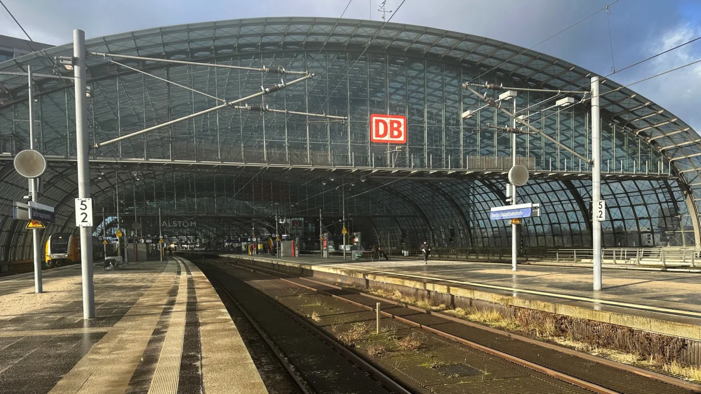

Business / Economy
German train drivers begin six-day strike, hitting travel and the economy

Empty tracks and platforms at Berlin central station during a train drivers' strike on January 24.
Germany is bracing for widespread disruption to rail services after train drivers embarked on a
record six-day strike Wednesday that will wreak havoc on travel plans, strain supply chains and deal a new blow to the sputtering economy.
It’s the second time this month that members of Germany’s GDL Union have walked off the job
in an ongoing wage dispute with Deutsche Bahn. The state-owned rail operator said the action would cause delays and cancellations to long-distance, regional and city commuter services until Monday. Freight transport will also face “considerable restrictions.”
Pre-booked tickets for travel during the strike will remain valid for future trips, Deutsche Bahn
added. Passengers can also cancel their booking and receive a full refund. Some commuters expressed frustration at the train drivers’ latest action.
“I’ve always been understanding of strikes of all kinds. But my patience has now run out,” Ilse
Terwey told CNN at Berlin’s main train station. “Nobody wins. Everyone loses. Passengers lose. The economy loses, the (railway’s) image loses.”
The longest industrial action in Deutsche Bahn’s 30-year history will pile more pressure on
Germany’s vast manufacturing sector, which is already grappling with high energy costs, supply chain delays, elevated interest rates, and weak domestic and foreign demand. Almost a fifth of all freight in Germany is transported by rail, according to the country’s statistics office.
Industrial production, dominated by manufacturing, contracted 2% last year, the country’s
statistics office said last week. That was a major drag on the economy overall, with gross domestic product falling 0.3% in 2023, likely the weakest performance among Europe’s big countries.
A sign at Berlin's main train station on Wednesday informing travelers of 'massive disturbance throughout Germany' as a result of the strike.
According to Commerzbank chief economist Joerg Kraemer, although the latest disruption could
cost the transport sector “a mere” €30 million ($32.6 million) a day, costs will be much higher “if factories have to reduce their production due to missing supply.”
The strike “is straining the nerves of the public” and hurting “the already tarnished reputation of
Germany as a business location,” he added.
Businesses have been scrambling to find workarounds, but industry bodies have already
warned that these won’t fully offset the disruption, which coincides with bottlenecks caused by attacks on shipping in the Red Sea, one of the world’s main trade routes.
The strike represents “a major logistical challenge” for the chemical and pharmaceutical sector,
the German Chemicals Industry Association told CNN.
“The railroads are very important for the industry’s logistics when it comes to supplying raw
materials, and shipping intermediate and finished products,” added the trade body, whose member companies employ nearly 550,000 people.